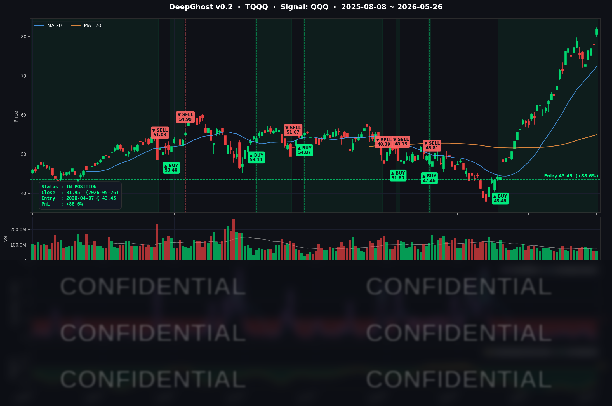

목표가 상향과 트럼프의 립서비스로 마이크론이 19%나 올랐습니다.
미국 국채 금리는 더 떨어질 룸이 남아 있습니다.
즉, 시장은 그때까지 더 오를 수 있다는 얘기가 되겠습니다.
오늘의 매매 신호
| 항목 | 내용 |
|---|---|
| 오늘 할 일 | ✅ 아무것도 안 해도 됩니다 |
| 포지션 상태 | 📈 TQQQ 보유 중 (IN POSITION) |
| 매수 진입일 | 2026-04-07 (49일째) |
| 진입가 → 현재가 | $43.45 → $81.95 |
| 현재 포지션 수익 | +88.61% |
TQQQ 시그널 — IN POSITION
현재 상태: 매수 포지션 유지 중 | 누적 수익률 +88.61%

{"originWidth":2188,"originHeight":1451,"style":"alignCenter","caption":"본 매매 시그널은 Ghost.AI 퀀트 알고리즘 출력 시그널을 활용한 매매의 예시입니다."}_##]
시그널이 말하는 것
오늘(5/26) TQQQ 는 하루에 +5.28% 점프하며 5월 들어 가장 강한 상승을 보였습니다. 모델 내부 지표는 여전히 강한 매수 우호 구간에 머물러 있고, 청산 임계점까지 상당한 여유가 있는 상태입니다.
49일 전(4/7) 전쟁 패닉으로 시장이 무너졌을 때 진입가 $43.45 에서 매수한 한 자리가, 오늘 메모리 사이클·美-이란 평화협상·금리 하락이라는 3중 호재의 정확한 수혜처로 자리 잡았습니다. 수익율 +88.61% — 90% 라인 코앞입니다.
단, 3배 레버리지 + 49일 보유 + +88% 라는 조합은 직관적 차익실현 충동이 가장 강해지는 구간이기도 합니다.
역사적으로 70% 수익 이상에서는 익절하는게 유리했었습니다. 이번장은 더 강하내요. 즉, 과열 구간이라는 반증이기도 합니다.
오늘 미국 마감 — 주요 이슈 서머리
지수 마감
| 지수 | 종가 | 등락률 |
|---|---|---|
| S&P 500 | 7,519.12 | +0.61% (사상최고치) |
| Nasdaq Composite | 26,656.18 | +1.19% (사상최고치) |
| Dow Jones | 50,461.68 | -0.23% |
| Russell 2000 | 2,920.54 | +1.79% |
| QQQ | 730.28 | +1.78% |
| TQQQ | 81.95 | +5.28% |
| IWM | 290.51 | +1.89% |
Memorial Day 연휴 후 첫 거래일에 S&P 500·나스닥 사상최고치와 러셀 2000 +1.79% 의 broad-based risk-on 이 동시에 터졌습니다. 다우만 메가캡 차익실현 + 정유주 약세로 -0.23%.
국채 금리 & 연준
| 만기 | 수익률 | 전일 대비 |
|---|---|---|
| 3개월 (^IRX) | 3.58% | -0.3bp |
| 5년 (^FVX) | 4.18% | -7.3bp |
| 10년 (^TNX) | 4.49% | -6.5bp |
| 30년 (^TYX) | 5.03% | -3.8bp |
Bull steepening 양상. 단기물도 동반 하락하며 단기 인하 기대가 일부 회복됐고, 장기물도 후퇴하며 듀레이션이 긴 빅테크·반도체·소형주 멀티플이 동반 확장됐습니다. 10년물 4.49% 는 약 1주 만에 가장 낮은 수준 — TQQQ +5.28%·QQQ +1.78%·RUT +1.79% 의 강한 위험선호 랠리가 직접 금리 하락에 연동된 케이스입니다.
연준 측은 5/26 당일 별도 발언 없음. 시장은 5/20 공개된 4/29 FOMC 의사록 ("many" 위원이 인플레 고착 시 인상 옵션 언급) 의 매파 톤과, 유가 후퇴·평화협상 진전의 디스인플레 시그널 사이에서 후자에 더 무게를 두며 채권은 buy, 주식은 강세로 반응했습니다.
핵심 이슈
- Micron Technology (MU) 시총 1조 달러 진입. UBS 가 매수 의견을 유지하며 TP 를 $1,625 로 상향(현 주가 대비 +80% upside). 메모리·HBM 사이클이 cyclical 이 아니라 AI 인프라發 구조적 개선이라는 인식. SOX·반도체 ETF 동반 강세 — AVGO +1.90%, INTC +3.07%, QCOM +4.48%.
- 美-이란 평화협상 진전 + 유가 후퇴. Trump 대통령 "negotiations proceeding nicely" 발언. WTI $93.57 (-3.14%), Brent $96.59 (-6.71%, 100달러 하향 이탈). 에너지發 인플레 프리미엄이 일부 되감기며 10년물도 -6.5bp 동반 하락.
- 러셀 2000 +1.79% — 위험선호 확대. 빅테크 일변도가 아닌 소형주까지 동반 랠리. 금리 하락 + 평화협상 + AI 모멘텀의 3중 호재로 Market breathe가 의미 있게 개선됐습니다.
매크로 체크
- VIX: 17.01 (+0.31) — 박스권 유지, 절대 레벨은 낮지만 PCE 대기로 큰 후퇴는 아님
- CNN 공포탐욕 지수: 약 60 (Greed) — 5월 초 70+ 대비 다소 후퇴, 그래도 Greed 영역
- WTI / Brent: $93.57 (-3.14%) / $96.59 (-6.71%) — Brent 100달러 하향 이탈
- Gold: $4,507.30 (-0.30%) — 위험선호 강화로 안전자산 수요 소폭 약화
- 5/26 Conference Board 소비자 신뢰지수: "business conditions good" 22.3 → 18.5, "jobs plentiful" 26.9 → 25.5 로 노동시장 인식 소폭 악화. 다만 12개월 인플레 기대치는 소폭 하락 — 디스인플레 시그널 일부 확인
커버리지 종목 동향
| 종목 | 종가 | 등락률 | 비고 |
|---|---|---|---|
| AAPL | 308.33 | -0.16% | $310 부근 보합권, 다우 메가캡 차익실현 동조 |
| NVDA | 214.86 | -0.22% | 5/20 어닝 비트 직후 차익실현 지속 |
| MSFT | 416.03 | -0.61% | 다우 비중 종목 차익실현, AI/Azure 펀더멘털은 유지 |
| GOOGL | 388.88 | +1.54% | $390 저항 재시도, AI 검색 모멘텀 회복 |
| META | 612.34 | +0.34% | $610 저항 돌파 시도 |
| AMZN | 265.29 | -0.39% | 메가캡 차익실현 동조 |
| TSLA | 433.59 | +1.78% | RUT 동조 + 자율주행 헤드라인 |
| NFLX | 87.68 | -1.04% | 별다른 헤드라인 없는 약세 |
| AVGO | 422.01 | +1.90% | Micron 트릴리언달러 spillover |
| QCOM | 248.82 | +4.48% | 5/22 Q2 어닝 비트 + Stellantis 파트너십 확대 효과 지속 |
| INTC | 123.52 | +3.07% | 반도체 강세 동조, Citi TP $95→$130 모멘텀 잔존 |
시장과 시그널 — 오늘의 인사이트
금리 흐름이 TQQQ 에 주는 시사점
10년물 4.49% (-6.5bp), 5년물 4.18% (-7.3bp) — 듀레이션이 긴 자산이 가장 직접 수혜를 받는 환경이 이어졌습니다. 단 30년물은 여전히 5.03% 로 5% 위에서 거래되고, 4/29 FOMC 의사록의 매파 톤도 잔존합니다. 5/30 PCE 가 매파 서프라이즈를 낼 경우 10년물이 다시 4.6%+ 로 점프하며 빅테크 멀티플을 압박할 수 있습니다. 다만 현재 시그널은 청산 임계까지 거리가 매우 멀어, 일회성 PCE 충격으로 청산 트리거가 발생할 가능성은 낮은 상태입니다.
내일을 위한 체크리스트
- [ ] 5/27 (Wed) Fed Beige Book — 12개 연은 지역별 동향, 인플레·고용·소비 톤 체크
- [ ] 5/29 (Thu) 1Q GDP 2nd Estimate + 실업수당 — 매크로 톤 확인
- [ ] 5/30 (Fri) 4월 PCE Price Index — 연준 핵심 인플레 지표, 헤드라인/코어 모두 변동성 직접 트리거 가능
- [ ] GOOGL 매수 우호 강도 유지 여부 — 다음 2~3 거래일 추적
- [ ] 美-이란 협상 헤드라인 — Strait of Hormuz 봉쇄 이슈 재점화 시 유가·국채 변동성 직결
Ghost.AI — Quantitative AI Investment
Model: DeepGhost v0.2 | Transformer-Based Deep Learning
Coverage: 13 tickers | Updated every trading day after US market close
⚠️ 본 자료는 정보 제공 목적으로만 작성되었으며 투자 권유가 아닙니다. 모든 투자의 책임은 투자자 본인에게 있습니다. 과거 성과가 미래 수익을 보장하지 않습니다.